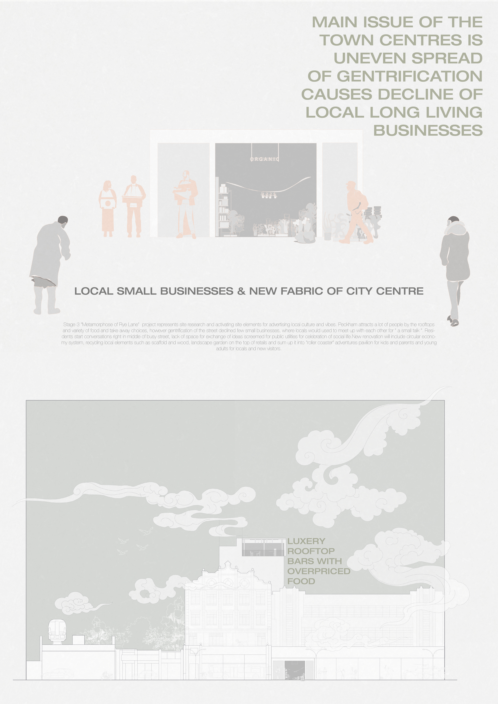
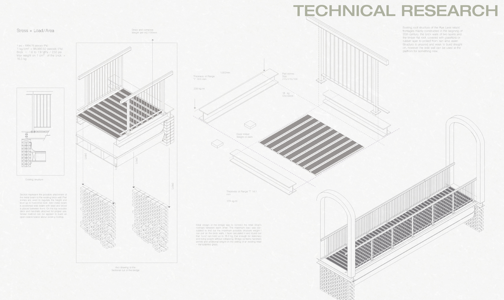
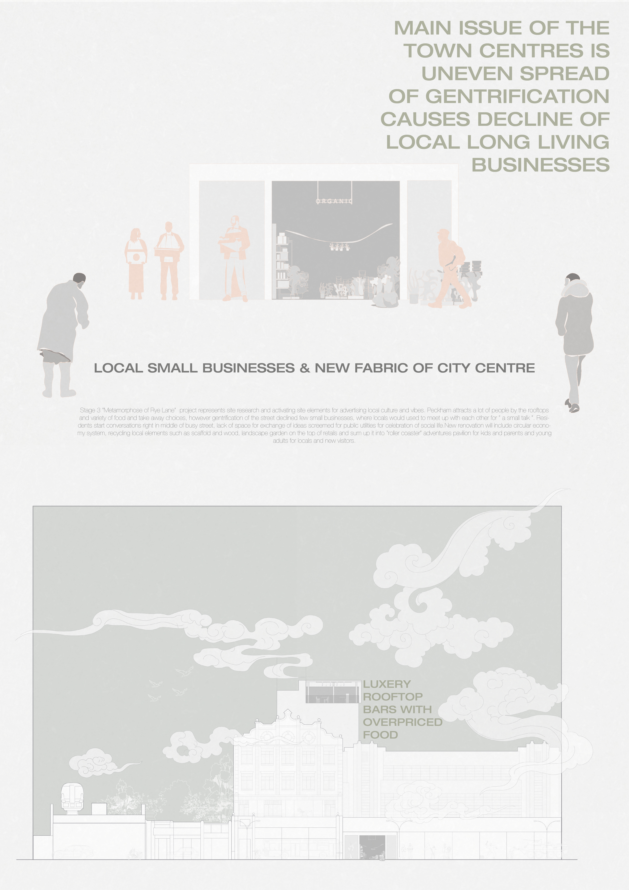
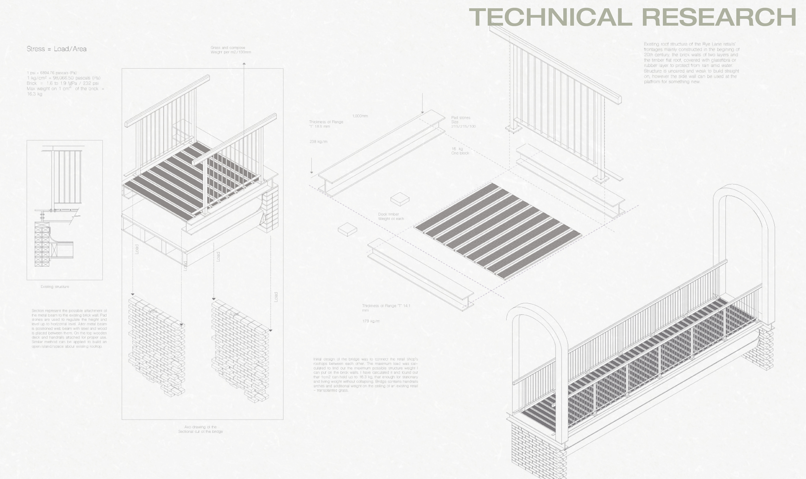
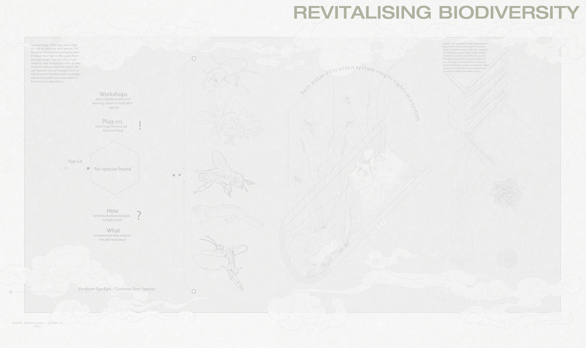
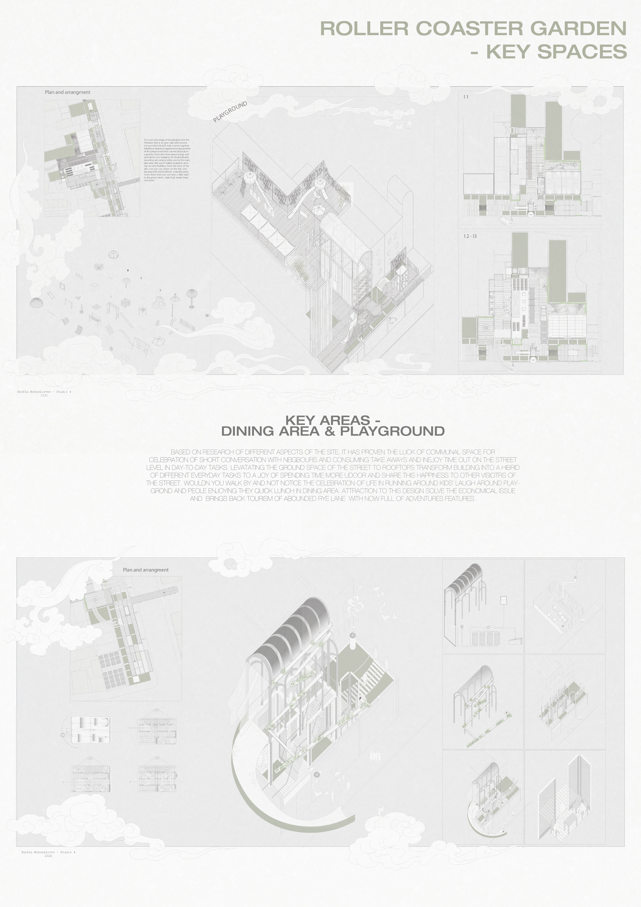
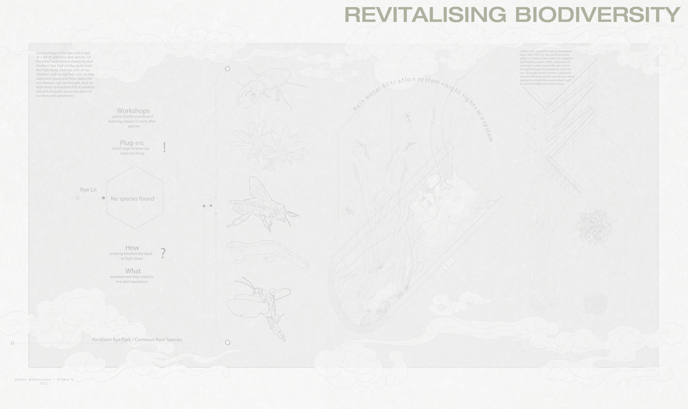
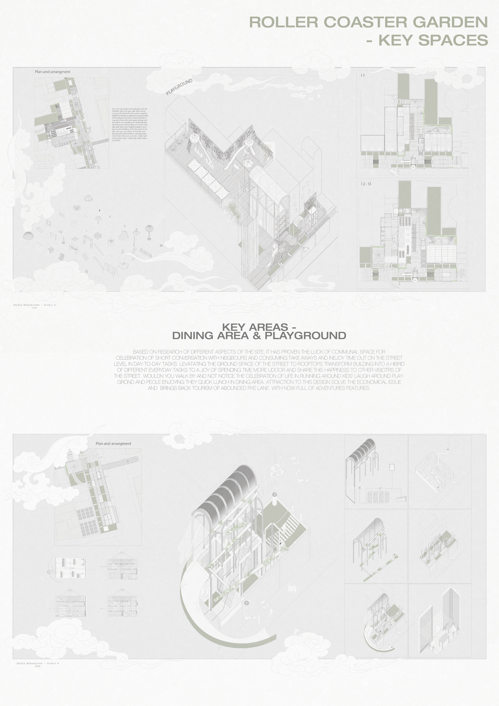

ROLLER COASTER GARDEN
BACK
Stage 3 “Metamorphose of Rye Lane" represents site re
search and activating site elements for advertising local culture and vibes. Peckham attracts
lots of people by the rooftops and variety of
food and take away, however gentrification of the street declined few small businesses that
locals used to meet with each other. Residents create conversation on the street, unfortunately, there is no space for exchange of ideas and
celebration affordable for every visitor. Renovation will include circular economy system,
recycling local elements such as scaffold and wood, landscape garden on the top of retails
and sum up it into “roller coaster” adventures pavilion for kids and parents and young adults.
PRESS AND HOLD TO ZOOM IN
 




 


